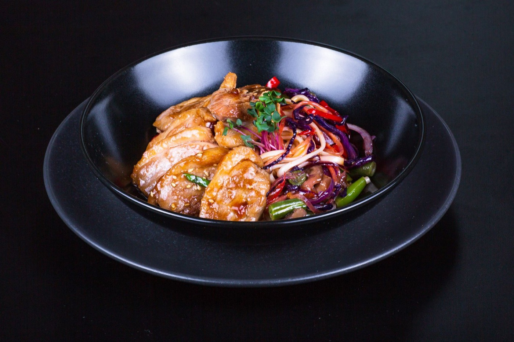
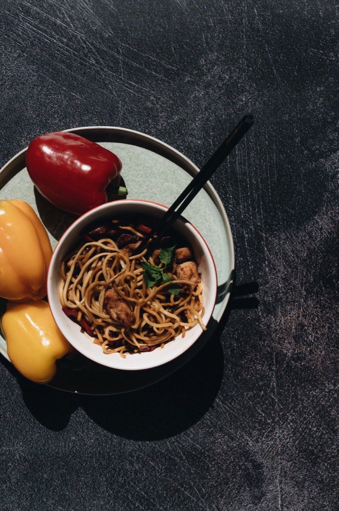
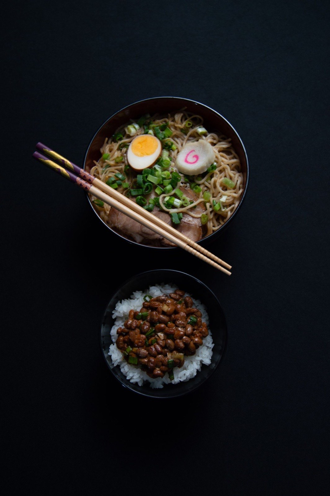
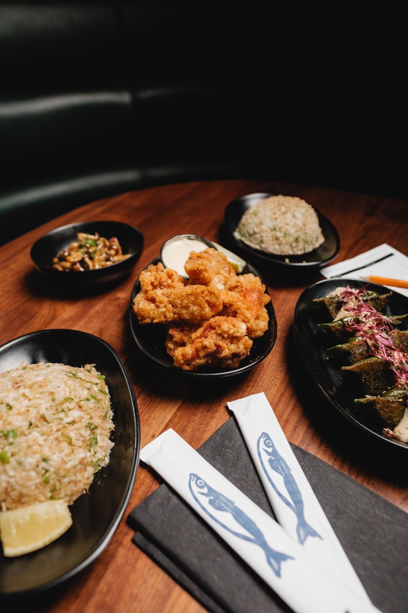
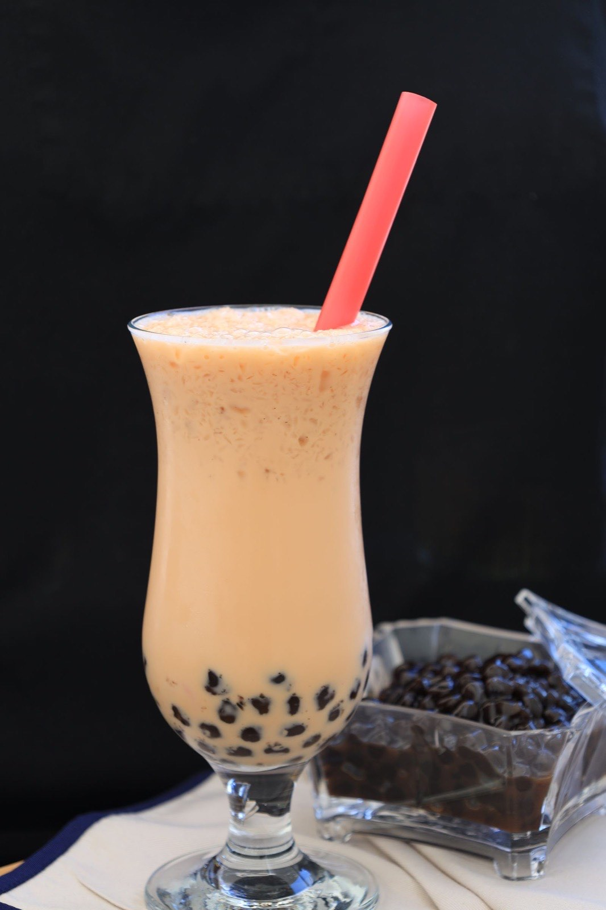
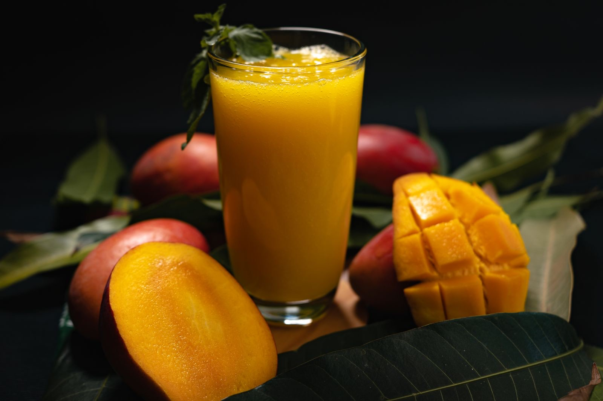
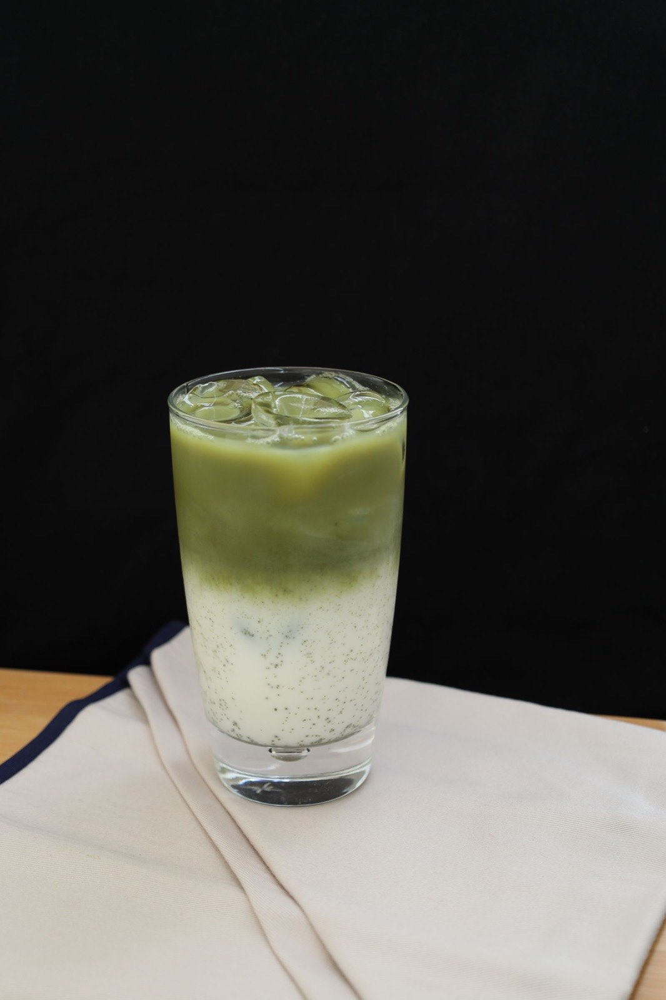

Stap 01
Vers gesneden
Elke dag snijden we de groente en bereiden we de basissen voor. Dat blijft mensenwerk.
Chinese afhaal · de eerste AI-wokchef van Europa
Gasten op Google: vers, royaal en supersnel

De kaart als systeem
Zes basissen en zes sauzen: 36 wokgerechten, altijd met verse groente en een bijgerecht naar keuze.
| Basis | Teriyaki | Zoetzuur | Ketjap | Gon bao | Zw. peper | Thais rood |
|---|
Liever foe yong hai, een rijsttafel of een broodje? Bekijk de volledige menukaart
Zo werkt het
Stap 01
Elke dag snijden we de groente en bereiden we de basissen voor. Dat blijft mensenwerk.

Stap 02
Elk gerecht heeft een eigen QR-kaart met precies de saus, de tijd en de temperatuur van de chef.

Stap 03
De wokrobot voert de kaart exact uit: dezelfde hittecurve en dezelfde beweging, zonder handcontact.

Stap 04
Binnen ± 5 minuten sta je weer buiten, met een wok die smaakt zoals vorige keer.
R-wok is van Sin-Ganh Ly en Marco Tan. Marco kookte eerder bij sushirestaurant Shizen in Den Bosch; zijn recepten bepalen wat er op de kaarten staat.
Lees hoe het werktDeze maand
Complete menu's met voorgerechten en de nieuwe Peking eend, voordeliger dan los.

NR 100 · 1 persoon 15,95
NR 103 · 2 personen 29,95
NR 107 · 4 personen 55,95Uit de shaker
Kies je thee, je smaak en je topping: achttien combinaties, allemaal dezelfde prijs.
1 Kies je thee
2 Kies je smaak
3 Kies je topping
€ 4,95 elke beker, elke combinatie



Uit de wijk
Zeer goed gegeten bij R-wok. De gerechten waren lekker en vers bereid en de porties waren ruim. Een goede prijs-kwaliteitverhouding en zeker een aanrader!
Vers, heerlijk en gezond. Zeker een fijne plek als je op zoek bent naar lekker eten dat ook nog eens vers en gezond is.
Inmiddels twee keer eten afgehaald en al meerdere keren bubble tea besteld. Het personeel is vriendelijk en het eten is lekker. We komen hier graag terug!
De biefstuk was erg mals, de groenten waren lekker en de pepersaus gaf het gerecht een lekkere pittige smaak. Ook de kip en spareribs vielen goed in de smaak.
Het personeel is vriendelijk en het eten is erg lekker. De service is prettig en alles was naar wens. Zeker voor herhaling vatbaar!
Echt een fijne plek om eten af te halen. Het eten was heerlijk gekruid en alles stond snel klaar. Wij waren positief verrast en komen zeker terug.
Goede ervaring bij R-wok. Het eten was lekker en het concept is erg origineel. Vooral de bami met pepersaus sprak erg aan. Voor herhaling vatbaar!
Voor het eerst bij R-wok gegeten en heerlijk gegeten. Het eten was lekker en bovendien snel bereid, en het personeel was vriendelijk. Ik kom hier graag nog eens terug!
Zo werkt bestellen
De hele kaart staat online: 36 wokgerechten, rijsttafels en bubble tea, met alle prijzen erbij.
Zo snel mogelijk (± 10 minuten) of op het kwartier dat jou uitkomt.
Je bestelling staat klaar op Maaspoortweg 285. Betalen doe je bij het afhalen, met pin of contant.